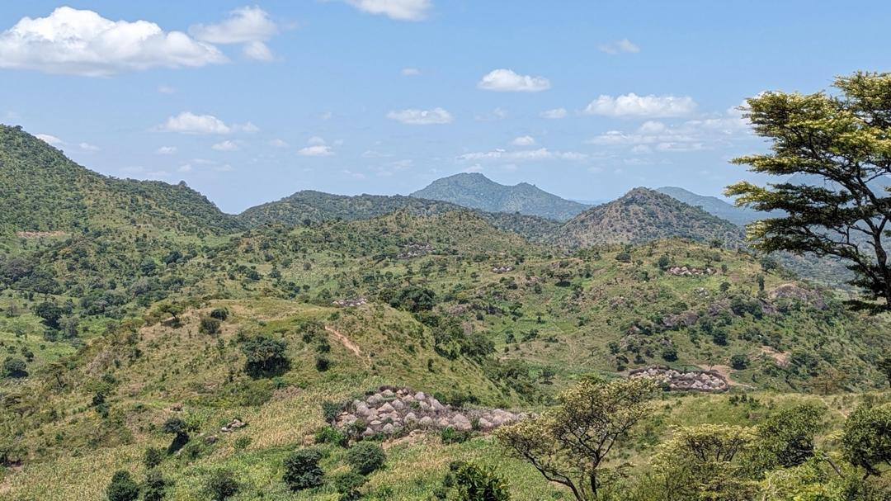

Mountain Gorillas of Bwindi & Chimps of Kibale
Bwindi Impenetrable National Park is a UNESCO World Heritage site dating back over 25,000 years, holding roughly more than half of the world's entire wild mountain gorilla population.
Our primate tracking itineraries are meticulously planned by native guides Emmanuel Obyara and Paul Olweny to cater to travelers with limited time, holiday makers, and trip extensions who want an unforgettable wildlife tracking experience.
All permits are secured directly with the Uganda Wildlife Authority (UWA). On finding your gorilla family, you spend a full hour observing their social interactions, grooming, and feeding at close range in their natural rainforest sanctuary.

3 Days Gorilla Tracking Bwindi Impenetrable National Park
Starts and ends in Entebbe. Excellent for guests with limited time, short work holiday makers, or connecting trip extensions seeking an unforgettable mountain gorilla tracking experience.
Day 1: Transfer to Bwindi Impenetrable National Park
Starting early after morning breakfast, you will head southwest to Bwindi Impenetrable National Park, crossing the equator with lunch en route into the "Switzerland of Uganda" through the scenic hills of Kigezi. With plenty of stopovers for photos and stretching from long drives, you'll arrive at your accommodation in the late hours of the afternoon to check in.
Accommodation: Ride 4 a Woman Lodge (Full Board).
Day 2: Gorilla Tracking in Bwindi Impenetrable Forest
After breakfast, take a short drive to Park Headquarters to meet with excellent local guides and trackers for a briefing on gorilla trekking etiquette. Hike into the forest where the gorillas were seen the night before and track from that point. Trekking can take from 1 to 6 hours and reach altitudes in excess of 7,500 feet over rough, muddy terrain. Once located, all fatigue is forgotten during one profound hour observing the gorilla family. Packed picnic lunch and plenty of drinking water provided. After debriefing by the UWA guide, you will be awarded an official trekking certificate.
Porter Service: An optional porter service is available at park headquarters to carry
your daypack and assist on steep sections—directly supporting local family income.
Accommodation: Ride 4 a Woman Lodge (Full Board).
Day 3: Transfer Back to Entebbe
Drive back to Entebbe (approximately 8 to 10 hours, road and weather dependent). Stopovers for photos, souvenir shopping at the equator crossing, lunch en route, and (time permitting) a visit to the traditional Mpigi Royal Drum Makers. Transfer to Entebbe International Airport for your evening departure flight.
8 Days Gorillas and Chimps Experience
The ultimate dual primate expedition combining wild chimpanzee tracking in Kibale National Park ("Primate Capital of the World") and mountain gorilla tracking in Bwindi Impenetrable Forest.
Day 1: Arrival in Entebbe
Meet and greet by your Imoratok Safaris professional driver-guide, transfer to your accommodation to rest and acclimatize.
Day 2: Transfer to Kibale National Park
Scenic overland drive to Fort Portal and the lush tea plantations surrounding Kibale Forest National Park.
Day 3: Chimpanzee Tracking & Bigodi Wetland Sanctuary
Morning chimpanzee tracking in Kibale Forest observing troops in the canopy, followed by an afternoon community walk in Bigodi Wetland Sanctuary.
Day 4: Transfer to Queen Elizabeth National Park
Drive south past the Rwenzori Mountains to Queen Elizabeth NP with an afternoon boat cruise along the Kazinga Channel.
Day 5: Kasenyi Game Drive & Ishasha Tree-Climbing Lions
Morning savanna game drive in Kasenyi plains, followed by a transfer through Ishasha to search for tree-climbing lions en route to Bwindi.
Day 6: Mountain Gorilla Tracking in Bwindi
The centerpiece expedition: hike into Bwindi Impenetrable Forest with UWA trackers to spend one unforgettable hour with a wild gorilla family.
Day 7: Lake Bunyonyi Relaxation
Canoeing, community island walks, and serene relaxation on the tranquil waters of crater Lake Bunyonyi.
Day 8: Return Transfer to Entebbe
Drive back to Entebbe via the equator crossing with stopovers for craft shopping and farewell airport transfer.
Need a Custom Primate Trekking Itinerary?
Whether adding gorilla habituation (4 hours) or chimpanzee habituation in Kibale, we customize every detail to fit your dates and budget.
Contact Us for Custom Booking